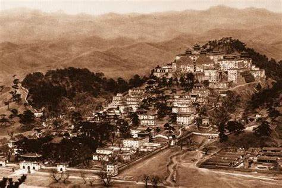

承德原名热河，历史悠久,有着丰富的多民族历史文化内涵。据考证这里早在新石器时代就有人类活动遗迹。西周及春秋战国时是古燕国属地。
每年大约有半年时间要在承德度过，清前期重要的政治、军事、民族和外交等。 国家大事，都在这里处理。因此，承德避暑山庄也就成了北京以外的陪都和第二个政治中心。
1933年日军侵占热河全境，热河省划为伪满洲国第九战区管辖。 1945年8月日军投降，热河属冀察热辽解放区。 1946年8月国民党军队占领承德。 1948年11月中国人民解放军接管承德，仍为热河省省会。
承德各县名称由来： 承德县——清雍正十一年（1733年）改热河厅为承德州。自此承德之名沿用至今。 兴隆县——据陈铁卿《河北省县名考原》：“境内有兴隆山，山下有兴隆山镇，县治其处，因名。” 平泉县——《热河新志》第7章《热河的地方志》称：平泉县“因县城的街内有水泉叫平泉，并于冬日严寒不冻，所以本县的名称叫平泉。” 滦平县——乾隆四十三年（1778年），改“喀喇河屯厅为滦平县，因喀喇河屯濒临滦河，又有向往“太平”“安宁”之意，故名。滦平县，因县城濒滦河之滨，故名。 隆化县——清宣统二年（1910年）由承德县析置，以驻地而得名。 丰宁满族自治县——乾隆四十三年（1778年）改厅建县，取“丰芜康宁”之意，定名丰宁。 宽城满族自治县——《明史·地理志》载：宽河守御千户所“东南有宽河，一名豹河（今作瀑河），下流经迁安县西北，又东合于滦河”。宽城以宽河为名。 围场满族蒙古族自治县——《热河新志》说：“本县的区域是昔日的清朝皇帝狩猎的场所。北方人俗呼打猎为打围，故名此地为围场。”
